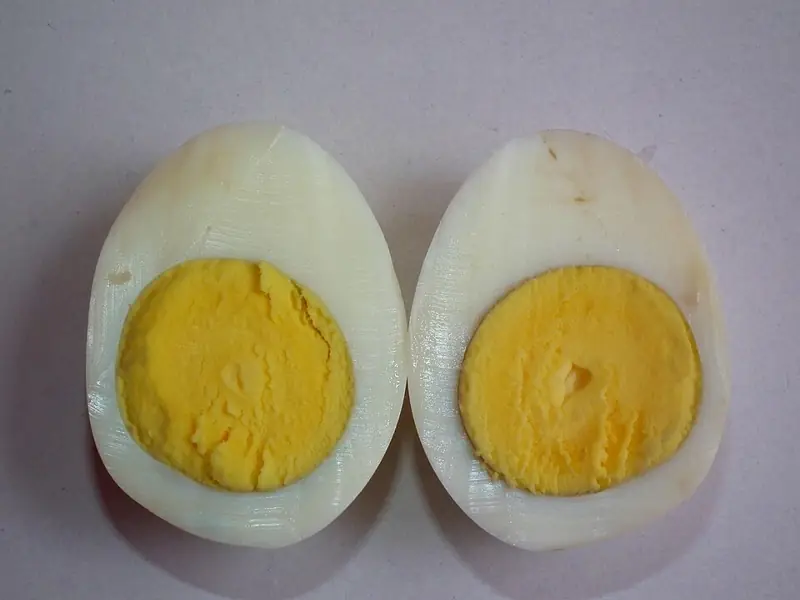

Фото: Ramesh NG, CC BY-SA 2.0

Яйца всмятку и в мешочек
Варёные яйца с жидким или кремовым желтком точно по времени
10 мин2 порц.173 ккал на порциюБ 14 · Ж 13 · У 1Интернациональная кухня
Продукты на 2 порц.
- Яйцо куриное4 шт
- Вода1000 мл
- Соль1 щеп.
- Хлеб белый по желанию2 шт
- Сливочное масло по желаниюпо вкусу
Как готовить
- Достаньте яйца из холодильника за 10-15 минут до варки, чтобы скорлупа не треснула.
- Доведите воду до кипения на сильном огне, убавьте до среднего.
- Опустите яйца в кипяток ложкой по одному.
- Варите 3 минуты для жидкого желтка (всмятку) или 5-6 минут для густого кремового (в мешочек).
- Сразу переложите яйца в холодную воду на 1 минуту, чтобы остановить варку.
- Подавайте в подставках с солью и тостами с маслом.
Совет. Время считается от момента, когда яйцо опустили в кипяток. Для яиц крупнее категории С0 добавьте 30 секунд.